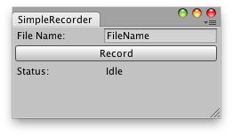

EditorWindow.Update()
Description 描述
Called multiple times per second on all visible windows.

Save frames from the Game View when on play mode.
// C# Example // Simple script that saves frames from the Game View when on play mode // // You can put later the frames together and create a video. // Note: The frames are saved next to the Assets folder.
using UnityEngine; using UnityEditor;
public class SimpleRecorder : EditorWindow { string fileName = "FileName";
string status = "Idle"; string recordButton = "Record"; bool recording = false; float lastFrameTime = 0.0f; int capturedFrame = 0;
[MenuItem("Example/Simple Recorder")] static void Init() { SimpleRecorder window = (SimpleRecorder)EditorWindow.GetWindow(typeof(SimpleRecorder)); window.Show(); }
void OnGUI() { fileName = EditorGUILayout.TextField("File Name:", fileName);
if (GUILayout.Button(recordButton)) { if (recording) //recording { status = "Idle..."; recordButton = "Record"; recording = false; } else // idle { capturedFrame = 0; recordButton = "Stop"; recording = true; } } EditorGUILayout.LabelField("Status: ", status); }
void Update() { if (recording) { if (EditorApplication.isPlaying && !EditorApplication.isPaused) { RecordImages(); Repaint(); } else status = "Waiting for Editor to Play"; } }
void RecordImages() { if (lastFrameTime < Time.time + (1 / 24f)) // 24fps { status = "Captured frame " + capturedFrame; ScreenCapture.CaptureScreenshot(fileName + " " + capturedFrame + ".png"); capturedFrame++; lastFrameTime = Time.time; } } }